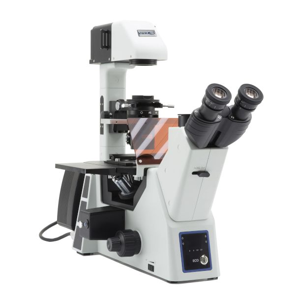

VWR VisiScope IT600FLD Fluorescence Microscope

| Microscópio de Fluorescência VWR VisiScope IT600FLD | |
|---|---|
| Location: | Lab. 1.87 Building 7 |
| Manager: | Margarida RamiresRodrigo Borges |
| Operador: | Utilizador |
| Working Principle: | Fluorescence Microscopy |
| Manufacturer: | VWR International |
| Model: | IT600FLD |
| Type: | Fluorescence Microscope |
| Website: | VWR International |
VWR® VisiScope® IT600 FLD, inverted trinocular fluorescence microscope designed for the observation and characterization of biological samples in laboratory and research applications. The equipment allows observations in bright field, dark field, phase contrast and fluorescence, providing flexibility for different types of samples and analysis methods.
The fluorescence system uses high-power LED illumination, with intensity control and blue, green and UV excitation filters, enabling the visualization of a wide variety of fluorochromes. The trinocular configuration allows for the integration of image acquisition systems, while the removable condenser and the possibility of using different objectives provide flexibility in equipment configuration.
The microscope is equipped with a digital VisiCam 32 Plus camera that allows for the capture of high-resolution images and videos, facilitating the documentation and analysis of observed samples.
Calendar / Availability
RequestMain Applications
- Observation of cell cultures;
- Fluorescence microscopy;
- Observation of microorganisms and microalgae;
- Visualization of cells labeled with fluorochromes;
- Morphological analysis of cells and tissues;
- Observation in phase contrast of live cells;
- Studies of expression/localization of fluorescent markers;
- Research in biotechnology, microbiology and environmental sciences;
Technical Specifications:
| Specification | Value |
|---|---|
| Manufacturer | VWR International |
| Model | VisiScope IT600 FLD |
| Head | Trinocular, 45° inclination |
| Oculars | WF 10×/24 mm |
| Lens Holder Revolver | Quintuple, inverted |
| Transmitted Illumination | White LED, 8 W, with intensity control |
| Fluorescence Illumination | High-power LED, 5 W, with intensity control |
| Excitation Filters | UV, Blue, Green |
| Condenser | Removable, NA 0.3 |
| Objectives | 4×, 10×, 40×, 100× (oil) |
| VisiCam - Model | 32 Plus |
| VisiCam - Type of Sensor | CMOS |
| VisiCam - Sensor | Sony Exmor |
| VisiCam - Resolution | 32 MP |
| VisiCam - Maximum Resolution | 5600 x 5600 px |
| VisiCam - Frame Rate | 8,1 fps @ 5600 × 5600; 30 fps @ 2800 × 2800; 30 fps @ 1400 × 1400 |
| VisiCam - Software | WaveImage |
| VisiCam - Operating Systems | Windows, MacOS e Linux |